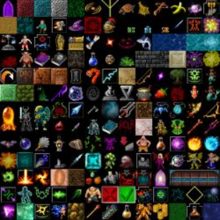

Return a new Tileset
Parameters:
isFullScreen = false
vSync = true
winWidth = 640
winHeight = 480
canViewPortX = 0
canViewPortY = 0
OpenWindow("TestTileset", winWidth, winHeight, isFullScreen, vSync)
mCanvas = OpenCanvas(winWidth, winHeight, canViewPortX, canViewPortY, winWidth, winHeight, 1)
Canvas(mCanvas)
mAtlas = LoadImage("testTileSet.png") 'Load in our atlas or tile set image
mTileSet = CreateTileSet(mAtlas, 24, 24) 'Create a tile set and assign it a holder to access
mTileMap = CreateTileMap(mTileSet, 20, 20) 'Create a tile map with our tile set holder "mTileSet"
'Now we have a blacnk tilemap to fill with tiles, we now use the mAtlas image to fill in the map
'First we will assign a grass tile across our entire tile map. lets grab a grass tile to fill in.
FillTile(mTileMap, 166, 0, 0, 20, 20) 'The tile number goes by starting at the top left corner to the right edge of the image,
'then wraps around and comntinues the count, the image is 13 wide (0-12) so 166 would be
'2 in from the end of the last row of images on the tileset.
SetTile(mTileMap, 15, 0, 0) 'With the map filled with grass tiles we can change a single tile, to a little guy in the
'top left corner.
'Before we begin our main loop, we need to make some variables for holding some important info
mOffsetX = 0
mOffsetY = 0 'Offset values for where the tile is to be drawn from, used for scrolling.
mViewportX = 640
mViewportY = 480 'How much of the tile map is to be drawn on the canvas
While Not Key(K_ESCAPE)
ClearCanvas()
DrawTileMap(mTileMap, 0, 0, mViewportX, mViewportY, mOffsetX, mOffsetY)
If Key(K_UP) Then
mOffsetY = mOffsetY - 0.5
ElseIf Key(K_DOWN) Then
mOffsetY = mOffsetY + 0.5
ElseIf Key(K_LEFT) Then
mOffsetX = mOffsetX - 0.5
ElseIf Key(K_RIGHT) Then
mOffsetX = mOffsetX + 0.5
End If
Update()
Wend
'As you can see this replaces the grass tile with a character tile, if we wanted to place the character or any other object or image ontop of the tile
'we would DrawImage() an image not using the tilemap.

Related: CreateTileMap SetTile FillTile DrawTileMap